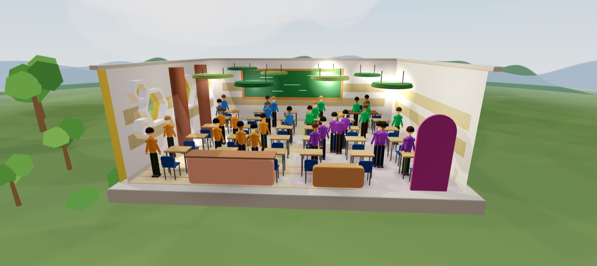
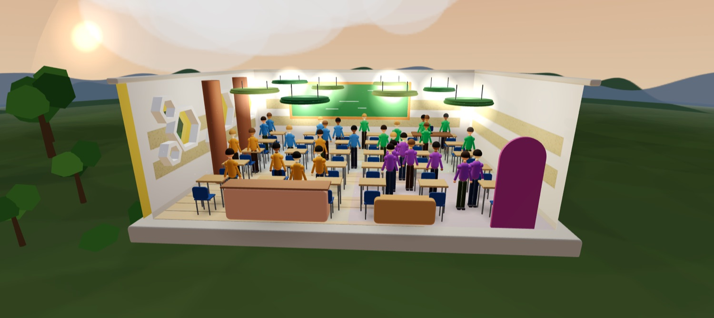
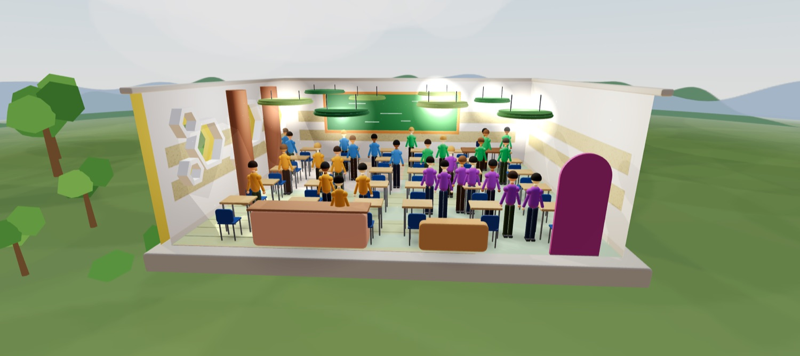

Un sistema multi-agente de iluminación inteligente que reduce el consumo energético hasta un 60% usando Inteligencia Artificial, Gemelos Digitales e IoT — todo simulado, sin hardware.
Una réplica 3D del aula que corre en el navegador. Las imágenes de abajo no son ilustraciones: son capturas del gemelo funcionando.



No hay que instalar nada — corre en el navegador
En un salón de clases convencional las luces permanecen encendidas sin importar si hay personas, si entra luz natural o qué zona del aula está siendo utilizada. Nosotros diseñamos un sistema que lo soluciona.
TwinLight es un sistema multi-agente que observa el aula en tiempo real —personas presentes, luz natural disponible, hora del día y clima— y decide de forma autónoma qué luces encender, atenuar o apagar en cada zona.
Para validar el impacto sin necesidad de hardware físico, construimos un Gemelo Digital: una réplica virtual 3D del aula que ejecuta el sistema de IA y registra el consumo energético antes y después de la optimización.
El resultado: una propuesta replicable en cualquier institución educativa, con evidencia cuantificable de ahorro económico y reducción de huella de carbono.
Los salones de clase de Colombia desperdician energía eléctrica con iluminación innecesaria durante miles de horas al año.
6 agentes de IA coordinados deciden la iluminación en tiempo real según ocupación, luz natural, comandos de voz y emergencias.
El Gemelo Digital mide, compara y reporta el consumo en kWh, COP y kg CO₂ — con datos reales de la tarifa colombiana.
Si se implementa en 100 salones, se evitarían unos 3,800 kg de CO₂ por año — equivalente a plantar 180 árboles.
Cada kilovatio-hora de electricidad consumida en Colombia genera 0.126 kg de CO₂ (UPME, 2023). Nuestro sistema reduce el consumo energético del aula en un 40–60%, lo que se traduce directamente en menos emisiones, medidas con precisión en el Gemelo Digital.
El sistema compara en tiempo real las emisiones con y sin IA, calcula el CO₂ evitado por hora, día y año, y lo convierte en equivalencias comprensibles: árboles plantados, kilómetros en auto evitados y cargas de celular equivalentes.
El sistema está construido sobre una arquitectura multi-agente: seis módulos especializados que se comunican entre sí para tomar decisiones de iluminación en tiempo real. El Gemelo Digital replica el comportamiento físico del aula en un entorno virtual 3D, permitiendo medir el impacto sin necesidad de instalar hardware.
6 agentes autónomos coordinados por un orquestador central que lee los sensores y decide cada 5 segundos.
Réplica virtual 3D del aula con Three.js que simula condiciones reales de iluminación, clima y ocupación.
Reglas inteligentes que combinan datos de ocupación, luz solar y comandos de voz para optimizar el consumo.
La interfaz se actualiza instantáneamente mediante WebSockets — sin recargar la página, sin latencia.
Con BlazeFace el aula puede contar personas de verdad. Todo ocurre dentro del navegador: ninguna imagen sale del computador.
Luz fija para la ruta de salida, parpadeo donde no hay que quedarse. Manda sobre todo lo demás, incluso sobre la voz.
El proyecto integra conceptos de Internet de las Cosas —sensores virtuales de luz, movimiento y voz— con principios de automatización industrial y el método científico propio del enfoque STEAM. Todo sin hardware: los sensores son módulos de software que simulan el mundo real.
Estudiantes de 10mo grado apasionados por la tecnología, el diseño y el impacto ambiental.